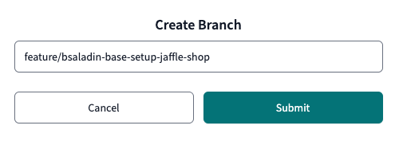

dbt Transformation
Introduction
In today’s data-driven world, organizations generate vast amounts of information from various sources—transactional systems, IoT devices, third-party APIs, and more. However, raw data alone is not enough. Without proper curation, governance, and accessibility, businesses struggle with inconsistent reporting, poor data quality, and unscalable analytics workflows.
This is where data warehousing plays a crucial role. A modern data warehouse, built on platforms like Snowflake, acts as a central repository for structured, semi-structured and unstructured data, ensuring consistency, security, and efficiency/automation in analytics and decision-making.
Key Benefits of a Data Warehouse
✅ Data Curation & Standardization – Transform raw data into well-modeled, analytics-ready datasets
✅ Automation & Orchestration – Reduce manual data processing with scheduled transformations
✅ Data Quality & Monitoring – Implement tests to detect anomalies and inconsistencies early
✅ Centralized Repository – Provide a single source of truth across departments
✅ Scalability & Performance – Leverage cloud-based architectures to handle growing data volumes
Despite these advantages, the landscape of data architecture has seen various trends—some short-lived, others transformative.
“Data Warehousing is dead!” they said—until Data Lakes became ungoverned messes, Lakehouses reinvented warehouses with Parquet, and AI-driven modeling looked suspiciously like moving targets.
Meanwhile, dbt materialized, Snowflake auto-scaled, and a CFO refreshed their Tableau dashboard.
Nice try, kid!
Let's get back to work:
This part will cover, which elements of a data warehouse need to be addressed. We will not fully implement all documentation, tests and leave out the intermediate data warehouse layer (e.g. DataVault - too complex for this setting).
1. Prepare Project Setup in dbt
Before starting with dbt transformations, we need to add some more configurations to the project.
-
Go to Develop > Cloud IDE.
-
Create a branch named
feature/<your-name>-base-setup-jaffle-shopfor your changes.
-
Modify
dbt_project.yml:dbt_project.yml# Name your project! Project names should contain only lowercase characters # and underscores. A good package name should reflect your organization's # name or the intended use of these models name: "jaffle_shop" version: "1.0.0" config-version: 2 # This setting configures which "profile" dbt uses for this project. profile: "snowflake" require-dbt-version: ">=1.6.0rc2" # These configurations specify where dbt should look for different types of files. # The `model-paths` config, for example, states that models in this project can be # found in the "models/" directory. You probably won't need to change these! model-paths: ["models"] analysis-paths: ["analyses"] test-paths: ["tests"] seed-paths: ["jaffle-data"] macro-paths: ["macros"] snapshot-paths: ["snapshots"] target-path: "target" # directory which will store compiled SQL files clean-targets: # directories to be removed by `dbt clean` - "target" - "dbt_packages" vars: ignore_default_schema: false truncate_timespan_to: "{{ current_timestamp() }}" "dbt_date:time_zone": "Switzerland/Zurich" # Configuring models # Full documentation: https://docs.getdbt.com/docs/configuring-models # In this example config, we tell dbt to build all models in the example/ directory # as tables. These settings can be overridden in the individual model files # using the `{{ config(...) }}` macro. models: jaffle_shop: staging: +materialized: view +schema: stg marts: +materialized: table +schema: dm -
Add under macros the following code into the file ./macros/generate_schema_name.sql
./macros/generate_schema_name.sqlThis macro will be used to generate the schema name for the tables and views that will be created in Snowflake and makes it more readable.{% macro generate_schema_name(custom_schema_name, node) -%} {%- set default_schema = target.schema -%} {%- if custom_schema_name is none or target.name == 'PRD' -%} {{ custom_schema_name | trim }} {%- else -%} {%- if var('ignore_default_schema')==true -%} {{ custom_schema_name | trim }} {%- else -%} {{ default_schema }}_{{ custom_schema_name | trim }} {%- endif -%} {%- endif -%} {%- endmacro %} -
Commit changes:
- Use a message like
dbt project setup. - Click Commit Changes.
- Use a message like
2. Define Data Sources
Now, let's define our data sources within dbt. This helps dbt to understand, which data tables from where (database, schema) we will be using.
- Create a new folder:
- Create a new source definition file:
-
Add the following content (from the provided source file):
version: 2 sources: - name: jaffle_shop database: PSA schema: JAFFLE_SHOP description: Mock data tables: - name: raw_customers description: One record per person who has purchased one or more items - name: raw_orders description: One record per order (consisting of one or more order items) - name: raw_items description: Items included in an order - name: raw_stores description: All stores from jaffle shop - name: raw_products description: One record per SKU for items sold in stores - name: raw_supplies description: One record per supply per SKU of items sold in stores -
Commit the changes. Add a message like
dbt source definition.
Bonus: Automate this step in the future
In dbt, there is a concept of packages that allows you to use macros for automation. dbt can generate the above source.yml file.
-
Add in the root directory (upper most level) a file called
packages.yml. -
Insert the below code snippet to define the required codegen (code generator) package.
-
Run
dbt depsin the command line, to install the package we just defined. -
Run the generate_source macro in the command line bar on the bottom to make it create the source.yml content.
For more details about codegen, refer to the documentation.dbt run-operation generate_source --args '{ "database_name": "PSA", "schema_name": "JAFFLE_SHOP", "generate_columns": true, "include_descriptions": true, "include_data_types": true }' -
After the successful run, we will copy the output into a new source.yml file, in the folder staging. If it does not yet exist.
Open the
System Logs, selectDetailsand scroll down until you find the .yml section.Copy the snippet and paste it in a new file
./models/staging/source.yml.
3. Build Staging Models
Staging models are the initial data warehouse layer to transform raw data into more structured & clean formats.
-
Create SQL files in the
stagingfolder: -
Define a basic transformation:
Add the following code to your staging folder files:
./staging/stg_customers.sql
./staging/stg_locations.sql
./staging/stg_order_items.sql
./staging/stg_orders.sql
./staging/stg_products.sql
./staging/stg_supplies.sql
-
Commit the changes. Use a message like
add dbt staging models.
4. Add packages.yml for dbt Utils
- Create a
packages.ymlfile in the root directory. -
Add dbt packages for utilities:
-
Run dependencies:
Go to the terminal
and run the following command:
Expect the following result:
What does dbt deps do?
The dbt deps command installs all dbt packages listed in your packages.yml file.
- It fetches dependencies from the dbt Hub or a private repository.
- It installs them into the
dbt_packages/directory. - It ensures all packages are the correct version as defined in your configuration.
Running this command is essential before executing models that rely on dbt-utils or other packages.
5. First Build Process
-
Run the first dbt build:
-
This command will:
- Execute models (tables/views).
- Run tests and snapshots.
-
Expected output:
- Staging models materialized as views in Snowflake.
- Lineage graphs showing dependencies.

-
Check the Snowflake database:
Verify that the staging models are created in the
ANALYTICSdatabase. Schema name isDBT_<Your-NAME>_STG. -
Commit the changes. Use a message like
Staging base model complete and dbt build successful.
6. Create Data Marts
To provide structured data for analysis:
- Create a new folder:
- Create three models:
-
Add the following models to the marts folder:
./marts/customers.sql
./marts/order_items.sql
./marts/orders.sql
-
Check the lineage, even without running the models.
-
Run dbt build to create the data mart models in Snowflake:

Go and check the ANALYTICS database in Snowflake to see the new tables created.
-
Commit the changes. Use a message like
add dbt mart models.
üéâ Next Steps
Now that the dbt transformation pipeline is configured, proceed to data quality testing.
üîó Continue to: dbt Data Quality Tests